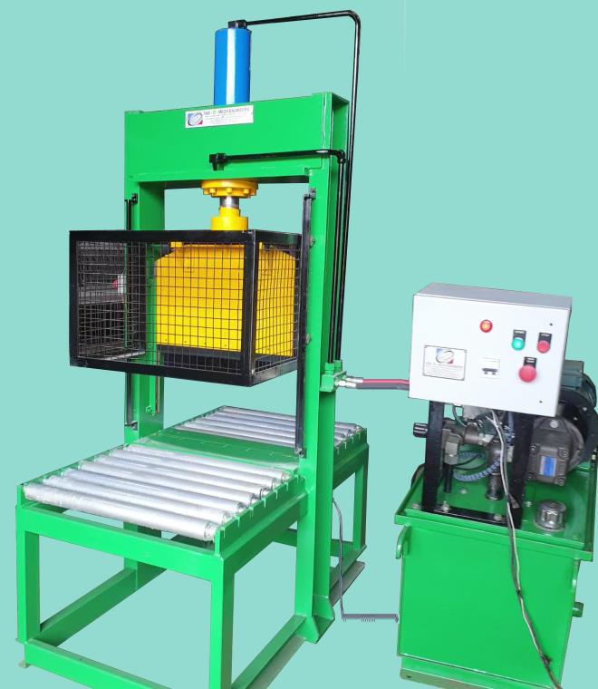
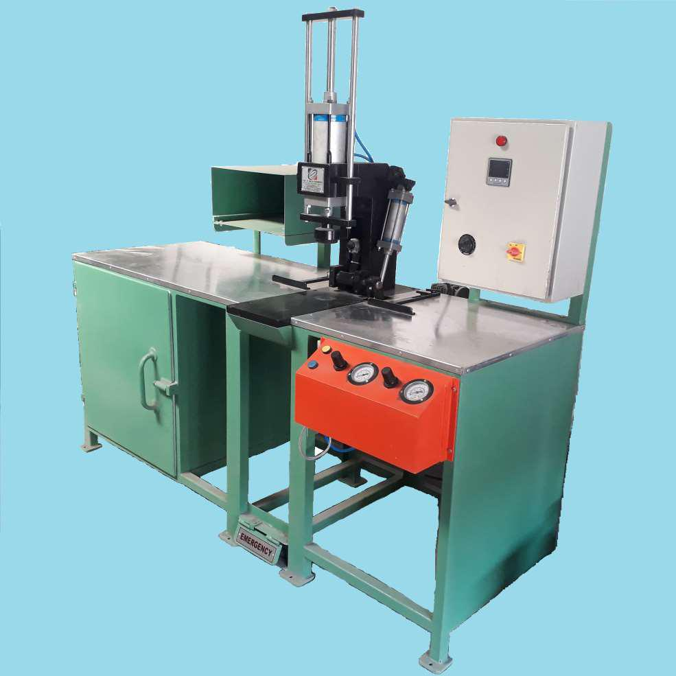
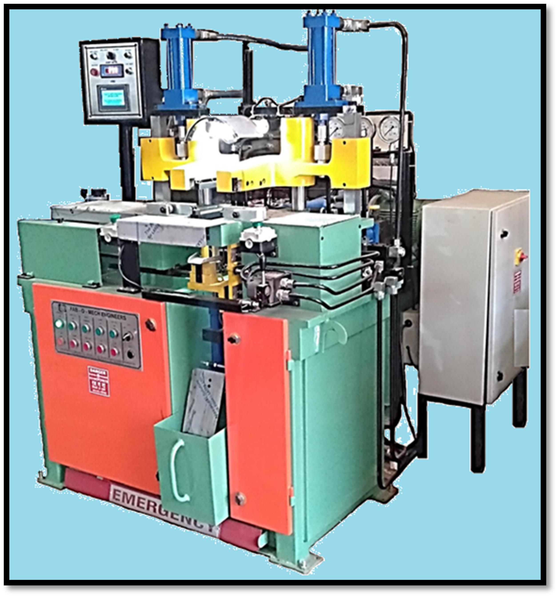
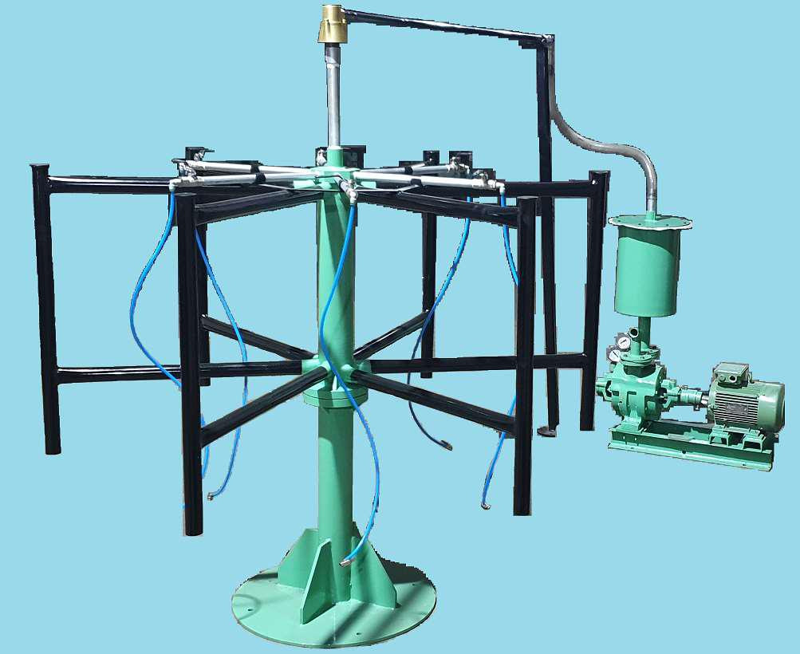

The Hydraulic Bale Cutter is a core component in FAB-O-MECH ENGINEERS' rubber processing machinery range, engineered specifically for the precise sectioning of rubber bales. Built on a reinforced Mild Steel fabricated body featuring 8-inch C-channel construction and a 25mm thick base plate, this machine provides the structural stability required for high-pressure operations.
Equipped with a 5 HP, 1440 RPM hydraulic powerpack, the system exerts powerful shearing force via a 125mm bore main cylinder. The machine utilizes a high-quality, duly hardened tool steel cutter blade to ensure clean, repeatable cuts, while a sliding-type safety guard is integrated to prioritize operator protection. Designed for durability and performance in demanding auto tube plant environments, the Hydraulic Bale Cutter offers reliable material preparation, ensuring that raw rubber stock is sized accurately for subsequent production stages.

A high-efficiency, automated system designed for the precise insertion and securing of valve cores into cured rubber inner tubes. Featuring robust construction and intuitive controls, the machine ensures consistent, airtight assembly, significantly increasing production throughput and reducing manual labor in post-curing operations.
View Details
A robust, heavy-duty vulcanizing press designed for high-precision rubber tube splicing. Featuring an automated PLC-controlled interface, hydraulic knife cutting, and programmable heat and pressure profiles, the H-150 ensures durable, airtight joints for tubes ranging from 55mm to 145mm in width.
View Details
A specialized, high-performance unit engineered for the rapid and effective removal of residual air from cured inner tubes prior to final packaging. Featuring a powerful 5 HP water-based vacuum pump and a robust rotary-type assembly with six vacuum hanger stations, this unit ensures complete deflation to facilitate compact, efficient storage and transport.
View Details